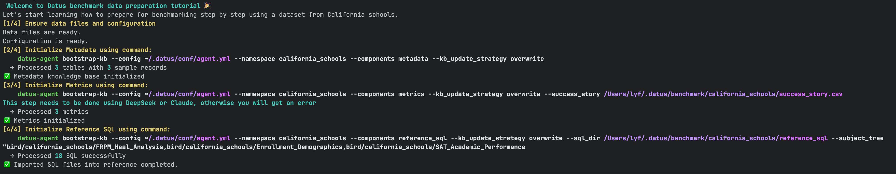

基准测试（Benchmark）¶
使用行业标准数据集评估 Datus Agent 的表现与能力。针对 BIRD 与 Spider 2.0-Snow 等数据集运行全面测试，衡量正确率、执行成功率与查询生成质量。
概览¶
基准测试模式可帮助你：
- 衡量准确性：评估从自然语言到 SQL 的正确率
- 跟踪成功率：观察在不同数据库上的执行成功情况
- 对比结果：将生成的结果与期望输出进行比对
- 发现改进点：定位可优化与需要迭代的环节
Docker 快速开始¶
使用预配置 Docker 镜像，内置基准数据集，快速上手。
第一步：拉取镜像¶
Tip
开始前请确保已安装并启动 Docker。
第二步：启动容器¶
Tip
Demo 数据集已预置，便于快速体验。
Terminal
docker run --name datus \
--env DEEPSEEK_API_KEY=<your_api_key> \
-d datusai/datus-agent:0.2.2
Terminal
docker run --name datus \
--env DEEPSEEK_API_KEY=<your_api_key> \
--env SNOWFLAKE_ACCOUNT=<your_snowflake_account> \
--env SNOWFLAKE_USERNAME=<your_snowflake_username> \
--env SNOWFLAKE_PASSWORD=<your_snowflake_password> \
-d datusai/datus-agent:0.2.2
第三步：运行基准测试¶
Warning
单个任务可能需要数分钟；全量运行可能耗时数小时到数天，取决于环境。
BIRD 数据集
Info
任务 ID 范围：0-1533
Terminal
docker exec -it datus python -m datus.main benchmark \
--namespace bird_sqlite \
--benchmark bird_dev \
--benchmark_task_ids <task_id1> <task_id2>
Terminal
docker exec -it datus python -m datus.main benchmark \
--namespace bird_sqlite \
--benchmark bird_dev
Spider 2.0-Snow 数据集
Info
任务 ID（instance ID）可在 spider2-snow.jsonl 中查询。
Note
启动容器时需配置 Snowflake 相关环境参数。
Terminal
docker exec -it datus python -m datus.main benchmark \
--namespace snowflake \
--benchmark spider2 \
--benchmark_task_ids <task_id1> <task_id2>
Terminal
docker exec -it datus python -m datus.main benchmark \
--namespace snowflake \
--benchmark spider2
第四步：结果评估¶
运行评估¶
Run Evaluation
docker exec -it datus python -m datus.main eval \
--namespace snowflake \
--benchmark spider2 \
--output_file evaluation.json \
--task_ids <task_id1> <task_id2>
Run Evaluation
docker exec -it datus python -m datus.main eval \
--namespace snowflake \
--output_file evaluation.json \
--benchmark spider2
评估结果¶
Evaluation Result
────────────────────────────────────────────────────────────────────────────────
Datus Evaluation Summary (Total: 30 Queries)
────────────────────────────────────────────────────────────────────────────────
✅ Passed: 19 (63%)
⚠️ No SQL / Empty Result: 0 (0%)
❌ Failed: 11 (37%)
• Table Mismatch: 4 (13%)
• Table Matched (Result Mismatch): 7 (23%)
- Row Count Mismatch: 1 (3%)
- Column Value Mismatch: 6 (20%)
────────────────────────────────────────────────────────────────────────────────
Passed Queries: 12, 40, 63, 80, 209, 279, 340, 436, 738, 774, 778, 853, 864, 1013, 1069, 1177, 1329, 1439, 1488
No SQL / Empty Result Queries: None
Failed (Table Mismatch): 263, 388, 484, 584
Failed (Row Count Mismatch): 455
Failed (Column Value Mismatch): 76, 131, 617, 642, 1011, 1205
────────────────────────────────────────────────────────────────────────────────
{
"status": "success",
"generated_time": "2025-11-07T15:56:40.050678",
"summary": {
"total_files": 1,
"total_output_nodes": 1,
"total_output_success": 1,
"total_output_failure": 0,
"success_rate": 100.0,
"comparison_summary": {
"total_comparisons": 1,
"match_count": 1,
"mismatch_count": 0,
"comparison_error_count": 0,
"empty_result_count": 0,
"match_rate": 100.0
}
},
"task_ids": {
"failed_task_ids": "",
"matched_task_ids": "0",
"mismatched_task_ids": "",
"empty_result_task_ids": ""
},
"details": {
"0": {
"total_node_count": 4,
"output_node_count": 1,
"output_success_count": 1,
"output_failure_count": 0,
"errors": [],
"node_types": {
"start": 1,
"chat": 1,
"execute_sql": 1,
"output": 1
},
"tool_calls": {
"list_tables": 1,
"describe_table": 2,
"search_files": 1,
"read_query": 3
},
"completion_time": 1762173198.4857101,
"status": "completed",
"comparison_results": [
{
"task_id": "0",
"actual_file_exists": true,
"gold_file_exists": true,
"actual_path": "/Users/lyf/.datus/save/bird_school/0.csv",
"gold_path": "/Users/lyf/.datus/benchmark/california_schools/california_schools.csv",
"comparison": {
"match_rate": 1.0,
"matched_columns": [
[
"eligible_free_rate",
"`Free Meal Count (K-12)` / `Enrollment (K-12)`"
]
],
"missing_columns": [],
"extra_columns": [
"School Name",
"District Name",
"Academic Year"
],
"actual_shape": [
1,
4
],
"expected_shape": [
1,
1
],
"actual_preview": "School Name | District Name | eligible_free_rate | Academic Year\n ----------------------------------------------------------------\n Oakland Community Day Middle | Oakland Unified | 1.0 | 2014-2015",
"expected_preview": "`Free Meal Count (K-12)` / `Enrollment (K-12)`\n ----------------------------------------------\n 1.0",
"actual_tables": [
"frpm"
],
"expected_tables": [
"frpm"
],
"matched_tables": [
"frpm"
],
"actual_sql_error": null,
"sql_error": null,
"actual_sql": "SELECT \n \"School Name\",\n \"District Name\", \n \"Percent (%) Eligible Free (K-12)\" as eligible_free_rate,\n \"Academic Year\"\nFROM frpm \nWHERE \"County Name\" = 'Alameda'\n AND \"Percent (%) Eligible Free (K-12)\" IS NOT NULL\nORDER BY \"Percent (%) Eligible Free (K-12)\" DESC\nLIMIT 1;",
"gold_sql": "SELECT `Free Meal Count (K-12)` / `Enrollment (K-12)` FROM frpm WHERE `County Name` = 'Alameda' ORDER BY (CAST(`Free Meal Count (K-12)` AS REAL) / `Enrollment (K-12)`) DESC LIMIT 1",
"tools_comparison": {
"expected_file": {
"expected": "",
"actual": [],
"matched_actual": [],
"match": true
},
"expected_sql": {
"expected": "",
"actual": [],
"matched_actual": [],
"match": true
},
"expected_semantic_model": {
"expected": "",
"actual": [],
"matched_actual": [],
"match": true
},
"expected_metrics": {
"expected": [
"Eligible free rate for K-12"
],
"actual": [],
"matched_expected": [],
"matched_actual": [],
"missing_expected": [
"Eligible free rate for K-12"
],
"match": false
}
},
"error": null
}
}
]
}
}
}
details 关键字段说明：
- comparison_results: 比较结果
- actual_sql: 由DatusAgent生成的SQL
- actual_path: 由DatusAgent生成的SQL执行后的结果
- gold_sql: 标准答案SQL
- gold_path: 标准答案的结果
- comparison: 对比结果：
- match_rate: 匹配度
- matched_columns: 匹配成功的列
- missing_columns: 未匹配到的列
- extra_columns: 标准答案不存在的列
- actual_tables: DatusAgent生成结果用到的表
- expected_tables: 标准答案中用到的表
- matched_tables: 匹配的表
- tool_calls: 记录各工具的调用次数
使用内置数据集进行基准测试和评估¶
第一步：初始化数据集¶

该步骤做了以下工作：
1. 增加California School的数据库配置和基准测试配置到agent.yml
2. 初始化California School的表的元数据信息
3. 使用 benchmark/california_schools/success_story.csv 构建指标信息
4. 使用 benchmark/california_schools/reference_sql的sql文件构建参考SQL
进行基准测试和评估¶
datus-agent benchmark --namespace california_schools --benchmark california_schools --benchmark_task_ids 0 1 2 --workflow <your workflow>
自定义基准测试¶
若希望基于自定义数据集进行测试，请参考以下配置示例。
添加 Benchmark 配置¶
agent:
namespace:
california_schools:
type: sqlite
name: california_schools
uri: sqlite:///benchmark/bird/dev_20240627/dev_databases/california_schools/california_schools.sqlite # 数据库文件路径，sqlite:///为相对路径； sqlite:////为绝对路径
benchmark:
california_schools: # benchmark 名称
question_file: california_schools.csv # 存放测试问题的文件
question_id_key: task_id # 问题ID的字段名
question_key: question # 问题内容的字段名
ext_knowledge_key: expected_knowledge # 扩展知识/问题说明字段名
# 以下是评估阶段使用的配置
gold_sql_path: california_schools.csv # 标准 SQL 的文件路径
gold_sql_key: gold_sql # 对应标准 SQL 的键名
gold_result_path: california_schools.csv # 标准答案结果文件路径
gold_result_key: "" # 当结果文件为单文件时，对应的字段名
¶
agent:
namespace:
california_schools:
type: sqlite
name: california_schools
uri: sqlite:///benchmark/bird/dev_20240627/dev_databases/california_schools/california_schools.sqlite # 数据库文件路径，sqlite:///为相对路径； sqlite:////为绝对路径
benchmark:
california_schools: # benchmark 名称
question_file: california_schools.csv # 存放测试问题的文件
question_id_key: task_id # 问题ID的字段名
question_key: question # 问题内容的字段名
ext_knowledge_key: expected_knowledge # 扩展知识/问题说明字段名
# 以下是评估阶段使用的配置
gold_sql_path: california_schools.csv # 标准 SQL 的文件路径
gold_sql_key: gold_sql # 对应标准 SQL 的键名
gold_result_path: california_schools.csv # 标准答案结果文件路径
gold_result_key: "" # 当结果文件为单文件时，对应的字段名
📖 Benchmark 配置字段说明
| 字段 | 说明 |
|---|---|
| question_file | 题目文件路径，支持 .csv、.json、.jsonl 格式。路径相对于 {agent.home}/benchmark/{benchmark_name}。 |
| question_id_key | 每个任务问题的唯一标识字段名。 |
| question_key | 自然语言问题的字段名。 |
| ext_knowledge_key | 附加知识或问题说明字段名。 |
| gold_sql_path | 标准 SQL 文件路径，支持两种情况： 1. 例如BIRD_DEV的单一文件；支持 .csv、.json、.jsonl 格式。2. 每个任务独立一个SQL文件（例如spider2））。 |
| gold_sql_key | 当 gold_sql_path 为单文件时，标准 SQL 所在字段名。 |
| gold_result_path | 标准结果文件路径，每个结果应是CSV格式的字符串。支持三种情况： 1. 单一 .csv、.json、.jsonl 格式的文件；2. 每个任务独立一个CSV文件（例如spider2）。 3. 不配置，系统会执行标准 SQL 获取结果。 |
| gold_result_key | 标准结果字段，当gold_result_path为单文件时，该字段有意义且必须配置。 |
构建基础知识库¶
根据你的情况，构建metadata、metrics和reference_sql。具体参考 knowledge_base/introduction
运行基准测试¶
👉 详见 第三步：运行基准测试
结果评估¶
👉 详见 第四步：结果评估